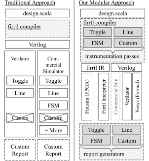

We demonstrate a new approach to implementing automated coverage
metrics including line, toggle, and finite state machine coverage.
Each metric is implemented through a compiler pass with a report
generator. They are decoupled from the backend simulation, emulation,
or formal verification tool through a simple API designed
around a single new cover primitive. Our prototype for the Chisel
hardware construction language demonstrates support across three
software simulators, the FPGA-accelerated FireSim simulator and a
formal tool. We demonstrate collecting line coverage while booting
Linux with FireSim at a target frequency of 65 MHz. By construction,
coverage can be trivially merged across backends.